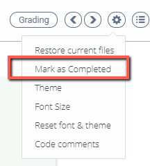

Complete Assignments¶
When you have completed an assignment you can mark it as completed (if the content author has not disabled this option) using one of the following methods:
In the assignment, click the Settings icon and choose Mark as Completed.

On the IDE menu bar, click Education > Mark as Completed.
On the last page in the guide, click the Mark as Completed button.
If there are any assessments in the assignment that have not been submitted, details are displayed so you can review before completing the assignment.
If you mistakenly mark an assignment as completed, contact your instructor. They can reset the status of the assignment so you can access it again.